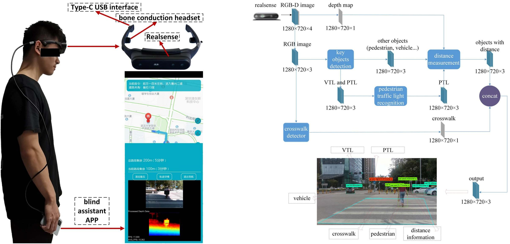
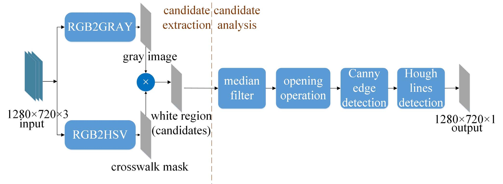
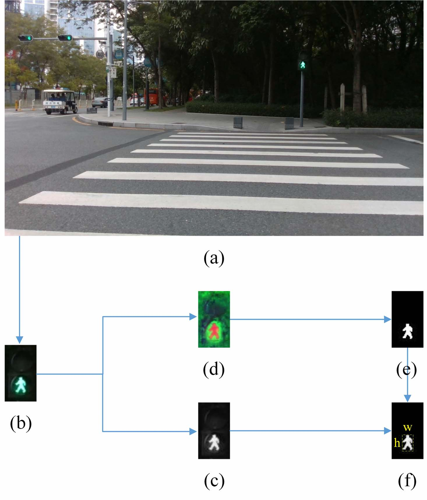
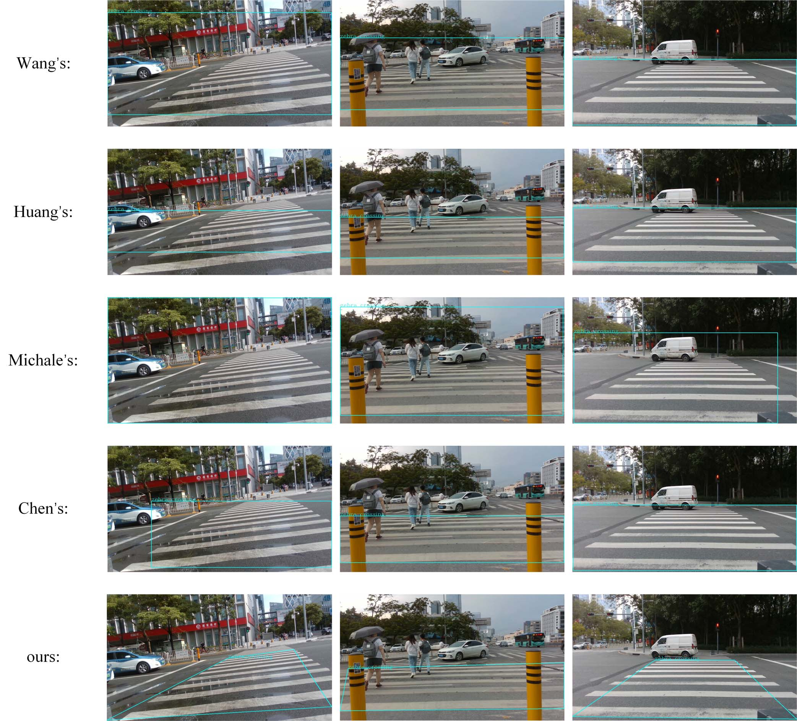
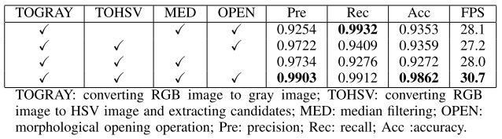
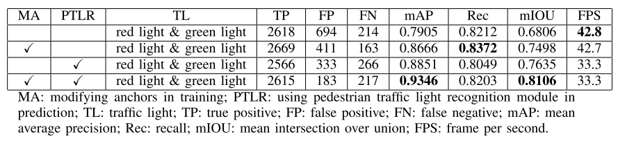

Dynamic Crosswalk Scene Understanding for the Visually Impaired


Shishun Tian1,3, Minghuo Zheng1,3, Wenbin Zou1, 3,*, Xia Li1,3, and Lu Zhang2
1. Shenzhen University; 2. INSA-Rennes; 3. Guangdong KLIIP;
[Website] [Paper] [Github]
Overview
Independent mobility poses a great challenge to the visually impaired individuals. This paper proposes a novel system to understand dynamic crosswalk scenes, which detects the key objects, such as crosswalk, vehicle, and pedestrian, and identifies pedestrian traffic light status. The indication of where and when to cross the road is provided to the visually impaired based on the crosswalk scene understanding. Our proposed system is implemented on a head-mounted mobile device (SensingAI G1) equipped with an Intel RealSense camera and a cellphone, and provides surrounding scene information to visually impaired individuals through audio signal. To validate the performance of the proposed system, we propose a crosswalk scene understanding dataset which contains three sub-datasets: a pedestrian traffic light dataset with 7447 images, a dataset of key objects on the crossroad with 1006 images and a crosswalk dataset with 3336 images. Extensive experiments demonstrated that the proposedsystem was robust and outperformed the state-of-the-art approaches. The experiment conducted with the visually impaired subjects shows that the system is practical useful.

Method Overview
CcossWalk Detector
A crosswalk is composed of several bright white stripes and dark background, so parallel straight edges of crosswalk stripes can be recognized as a kind of feature of crosswalks. The bright stripes alternate with a dark background in crosswalks, so the periodic gray value distribution is also a feature of crosswalks. In this paper, a novel crosswalk detection algorithm is proposed based on these features, as shown in following figure.
Candidate extraction and analysis are two components that constitute the detector. The former extracts candidates based on the feature of bright white stripes, the latter analysis candidates using the feature of parallel straight edges.

Pedestrian Traffic Light Recognition
The pedestrian lights are used at intersections to notify the pedestrians when to cross the street. The pedestrian traffic light detection provides the visually impaired with the status of pedestrian signals. In this paper, candidates for PTL are detected by a YOLOv4 based key objects detector adapted for localizing and recognizing PTL. The object detector provides the boundaries (x, y, w, h) and objectness confidence score that quantifies the classification confidence and location of an object.
The candidates, including the PTL, VTL and the extinguished traffic light, are detected by the key object detector. However, only PTL is needed for blind navigation in this paper. Pedestrian traffic light recognition is proposed to prune the unqualified ones, as shown in following figure. The same as the proposed crosswalk detector, first, the candidate (figure(b)) is extracted from RGB image (figure(a)) by the object dector. Then it is converted to gray image (figure(c)) and HSV image (figure(d)) to obtain the texture and color information. Next, a traffic light mask (figure(e)), containing both red and green regions, is extracted from HSV image. Then the shape of traffic light (figure(f)) is generated by multiplying the traffic light mask to gray image. The minimum bounding rectangle (MBR) of the shape of traffic light is highlighted with yellow dotted lines in figure(f).

Experiment Results and Analysis
CrossWalk Detection
The qualitative comparison of crosswalk detection algorithms in different scenarios

The results of ablation study

Pedestrian Traffic Light Recognition
The improvements of our methods

The detected results by YOLOv4 and our methods

Data Download
Baidu Cloud Disk:
Google Cloud Disk:
Citation
@ARTICLE{9481094,
author={Tian, Shishun and Zheng, Minghuo and Zou, Wenbin and Li, Xia and Zhang, Lu},
journal={IEEE Transactions on Neural Systems and Rehabilitation Engineering},
title={Dynamic Crosswalk Scene Understanding for the Visually Impaired},
year={2021},
volume={29},
number={},
pages={1478-1486},
doi={10.1109/TNSRE.2021.3096379}}
Collaborator

License
All datasets and code on this page are copyright by us and published under the Creative Commons Attribution-NonCommercial-ShareAlike 3.0 License.